library(dplyr)
library(RTCGA)
library(ggplot2)## RNASeq expressions
library(RTCGA.rnaseq)
# library(dplyr) if did not load at start
expressionsTCGA(BRCA.rnaseq, OV.rnaseq, HNSC.rnaseq) %>%
dplyr::rename(cohort = dataset) %>%
filter(substr(bcr_patient_barcode, 14, 15) == "01") -> BRCA.OV.HNSC.rnaseq.cancer
pcaTCGA(BRCA.OV.HNSC.rnaseq.cancer, "cohort") -> pca_plot
plot(pca_plot)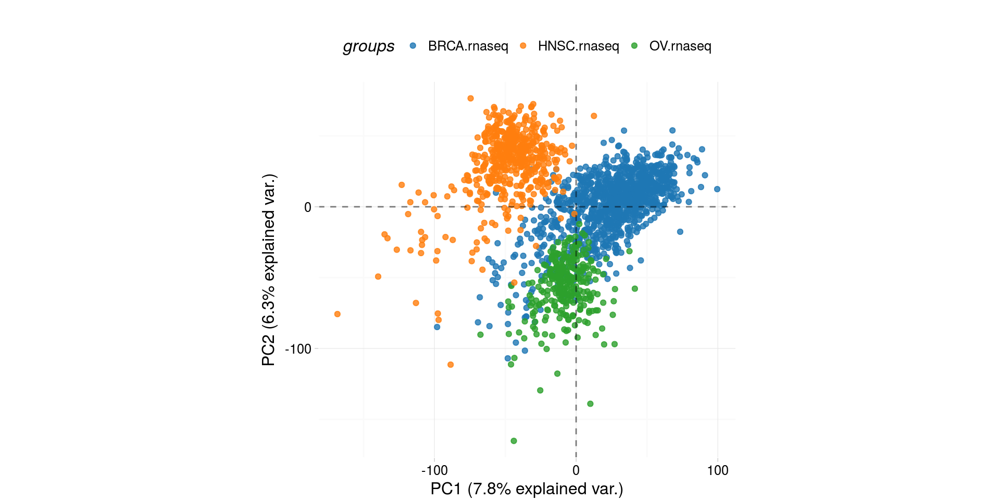
library(RTCGA.rnaseq)
# perfrom plot
# library(dplyr) if did not load at start
expressionsTCGA(
ACC.rnaseq,
BLCA.rnaseq,
BRCA.rnaseq,
OV.rnaseq,
extract.cols = "MET|4233"
) %>%
dplyr::rename(
cohort = dataset,
MET = `MET|4233`
) %>% #cancer samples
filter(
substr(bcr_patient_barcode, 14, 15) == "01"
) -> ACC_BLCA_BRCA_OV.rnaseq
boxplotTCGA(
ACC_BLCA_BRCA_OV.rnaseq,
"reorder(cohort,log1p(MET), median)",
"log1p(MET)",
xlab = "Cohort Type",
ylab = "Logarithm of MET",
legend.title = "Cohorts",
legend = "bottom"
) -> boxplot1
plot(boxplot1)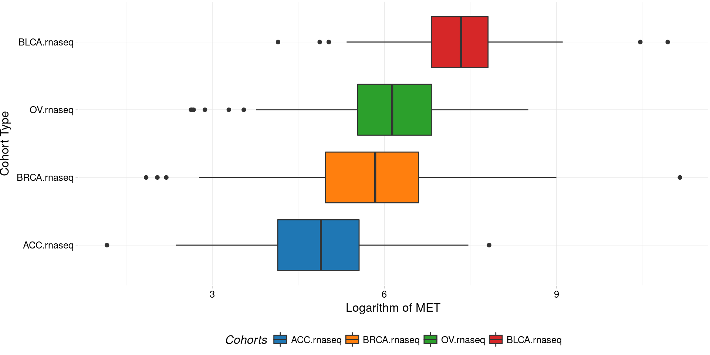
library(RTCGA.mutations)
# library(dplyr) if did not load at start
mutationsTCGA(
BRCA.mutations,
OV.mutations,
ACC.mutations,
BLCA.mutations
) %>%
filter(Hugo_Symbol == 'TP53') %>%
filter(substr(bcr_patient_barcode, 14, 15) ==
"01") %>% # cancer tissue
mutate(bcr_patient_barcode =
substr(bcr_patient_barcode, 1, 12)) ->
ACC_BLCA_BRCA_OV.mutations
mutationsTCGA(
BRCA.mutations,
OV.mutations,
ACC.mutations,
BLCA.mutations
) -> ACC_BLCA_BRCA_OV.mutations_all
ACC_BLCA_BRCA_OV.rnaseq %>%
mutate(bcr_patient_barcode =
substr(bcr_patient_barcode, 1, 15)) %>%
filter(
bcr_patient_barcode %in%
substr(ACC_BLCA_BRCA_OV.mutations_all$bcr_patient_barcode, 1, 15)
) %>%
# took patients for which we had any mutation information
# so avoided patients without any information about mutations
mutate(bcr_patient_barcode =
substr(bcr_patient_barcode, 1, 12)) %>%
# strin_length(ACC_BLCA_BRCA_OV.mutations$bcr_patient_barcode) == 12
left_join(
ACC_BLCA_BRCA_OV.mutations,
by = "bcr_patient_barcode"
) %>% #joined only with tumor patients
mutate(TP53 =
ifelse(!is.na(Variant_Classification), "Mut", "WILD")
) %>%
select(cohort, MET, TP53) ->
ACC_BLCA_BRCA_OV.rnaseq_TP53mutations
boxplotTCGA(
ACC_BLCA_BRCA_OV.rnaseq_TP53mutations,
"reorder(cohort,log1p(MET), median)",
"log1p(MET)",
xlab = "Cohort Type",
ylab = "Logarithm of MET",
legend.title = "Cohorts",
legend = "bottom",
facet.names = c("TP53")
) -> boxplo2
plot(boxplo2)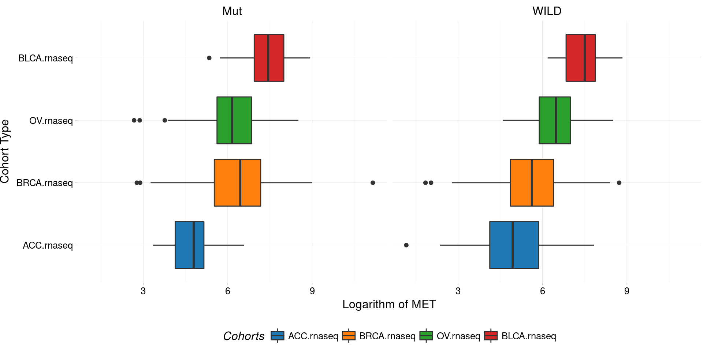
boxplotTCGA(
ACC_BLCA_BRCA_OV.rnaseq_TP53mutations,
"reorder(cohort,log1p(MET), median)",
"log1p(MET)",
xlab = "Cohort Type",
ylab = "Logarithm of MET",
legend.title = "Cohorts",
legend = "bottom",
fill = c("TP53")
) -> boxplot3
plot(boxplot3)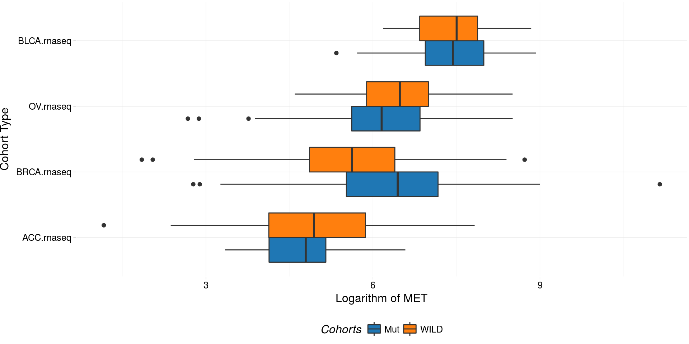
boxplotTCGA(
ACC_BLCA_BRCA_OV.rnaseq_TP53mutations,
"reorder(TP53,log1p(MET), median)",
"log1p(MET)",
xlab = "Cohort Type",
ylab = "Logarithm of MET",
legend.title = "Cohorts",
legend = "bottom",
fill = c("cohort")
) -> boxplot4
plot(boxplot4)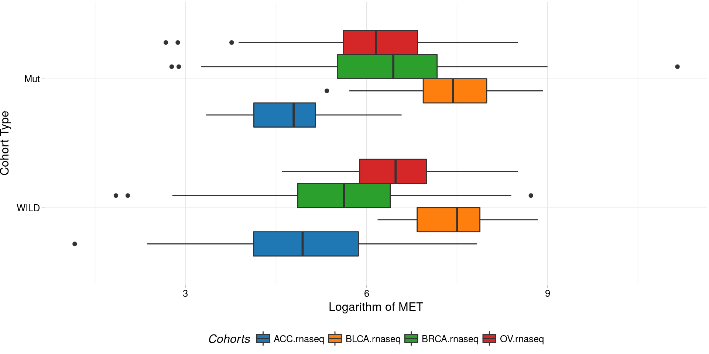
library(RTCGA.mutations)
# library(dplyr) if did not load at start
library(survminer)
mutationsTCGA(BRCA.mutations, OV.mutations) %>%
filter(Hugo_Symbol == 'TP53') %>%
filter(substr(bcr_patient_barcode, 14, 15) ==
"01") %>% # cancer tissue
mutate(bcr_patient_barcode =
substr(bcr_patient_barcode, 1, 12)) ->
BRCA_OV.mutations
library(RTCGA.clinical)
survivalTCGA(
BRCA.clinical,
OV.clinical,
extract.cols = "admin.disease_code"
) %>%
dplyr::rename(disease = admin.disease_code) ->
BRCA_OV.clinical
BRCA_OV.clinical %>%
left_join(
BRCA_OV.mutations,
by = "bcr_patient_barcode"
) %>%
mutate(TP53 =
ifelse(!is.na(Variant_Classification), "Mut","WILDorNOINFO")) ->
BRCA_OV.clinical_mutations
BRCA_OV.clinical_mutations %>%
select(times, patient.vital_status, disease, TP53) -> BRCA_OV.2plot
kmTCGA(
BRCA_OV.2plot,
explanatory.names = c("TP53", "disease"),
break.time.by = 400,
xlim = c(0,2000),
pval = TRUE) -> km_plot
print(km_plot)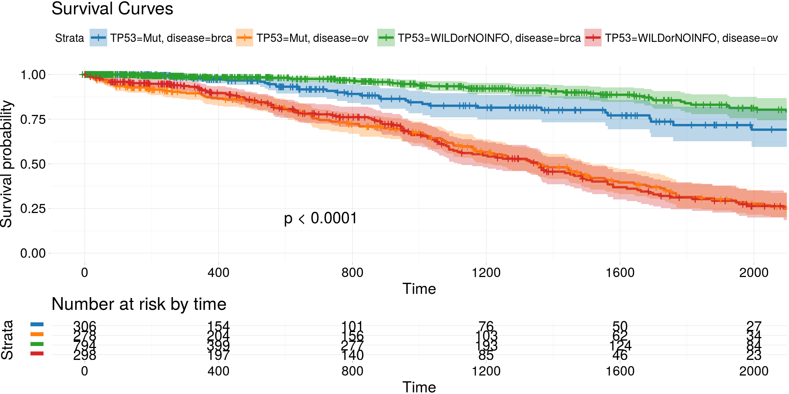
archivist::aread('MarcinKosinski/coxphSGD/1a06') %>%
do.call(rbind, . ) %>%
kmTCGA(
explanatory.names = "BRAF",
break.time.by = 1000,
xlim = c(0, 5000),
pval = TRUE) -> km_plot2
print(km_plot2)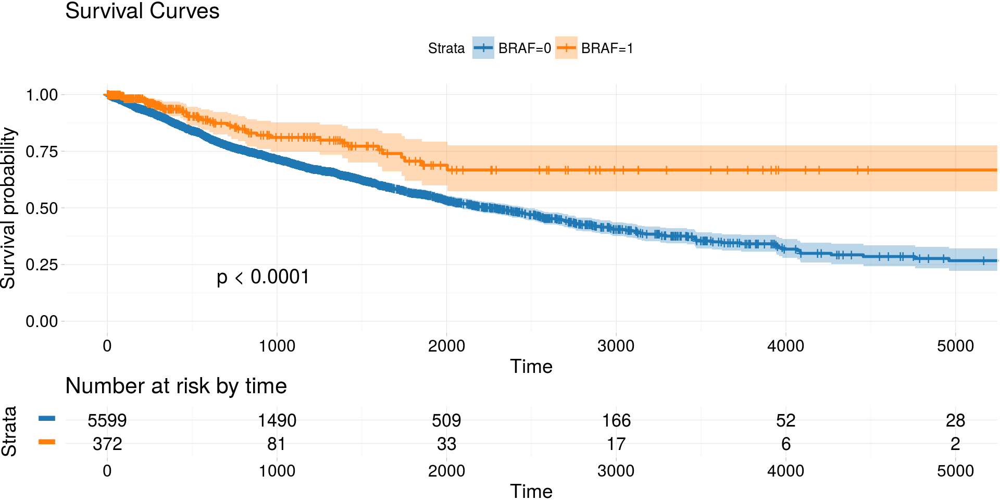
library(RTCGA.rnaseq)
# perfrom plot
# library(dplyr) if did not load at start
expressionsTCGA(
ACC.rnaseq,
BLCA.rnaseq,
BRCA.rnaseq,
OV.rnaseq,
extract.cols =
c("MET|4233",
"ZNF500|26048",
"ZNF501|115560")
) %>%
dplyr::rename(cohort = dataset,
MET = `MET|4233`) %>%
#cancer samples
filter(substr(bcr_patient_barcode, 14, 15) ==
"01") %>%
mutate(MET = cut(MET,
round(quantile(MET, probs = seq(0,1,0.25)), -2),
include.lowest = TRUE,
dig.lab = 5)) -> ACC_BLCA_BRCA_OV.rnaseq
ACC_BLCA_BRCA_OV.rnaseq %>%
select(-bcr_patient_barcode) %>%
group_by(cohort, MET) %>%
summarise_each(funs(median)) %>%
mutate(ZNF500 = round(`ZNF500|26048`),
ZNF501 = round(`ZNF501|115560`)) ->
ACC_BLCA_BRCA_OV.rnaseq.medians
heatmapTCGA(ACC_BLCA_BRCA_OV.rnaseq.medians,
"cohort", "MET", "ZNF500",
title = "Heatmap of ZNF500 expression")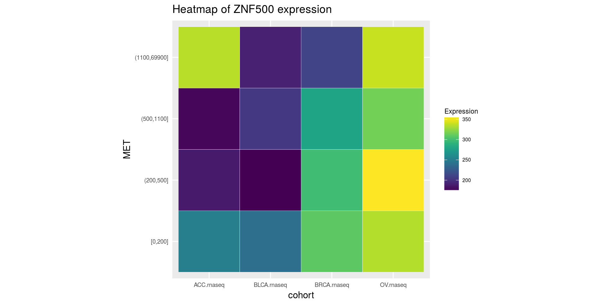
## facet example
library(RTCGA.mutations)
# library(dplyr) if did not load at start
mutationsTCGA(
BRCA.mutations,
OV.mutations,
ACC.mutations,
BLCA.mutations
) %>%
filter(Hugo_Symbol == 'TP53') %>%
filter(substr(bcr_patient_barcode, 14, 15) ==
"01") %>% # cancer tissue
mutate(bcr_patient_barcode =
substr(bcr_patient_barcode, 1, 12)) ->
ACC_BLCA_BRCA_OV.mutations
mutationsTCGA(
BRCA.mutations,
OV.mutations,
ACC.mutations,
BLCA.mutations
) -> ACC_BLCA_BRCA_OV.mutations_all
ACC_BLCA_BRCA_OV.rnaseq %>%
mutate(bcr_patient_barcode =
substr(bcr_patient_barcode, 1, 15)) %>%
filter(bcr_patient_barcode %in%
substr(ACC_BLCA_BRCA_OV.mutations_all$bcr_patient_barcode, 1, 15)) %>%
# took patients for which we had any mutation information
# so avoided patients without any information about mutations
mutate(bcr_patient_barcode =
substr(bcr_patient_barcode, 1, 12)) %>%
# strin_length(ACC_BLCA_BRCA_OV.mutations$bcr_patient_barcode) == 12
left_join(ACC_BLCA_BRCA_OV.mutations,
by = "bcr_patient_barcode") %>% #joined only with tumor patients
mutate(TP53 =
ifelse(!is.na(Variant_Classification), "Mut", "WILD")
) %>%
select(-bcr_patient_barcode, -Variant_Classification,
-dataset, -Hugo_Symbol) %>%
group_by(cohort, MET, TP53) %>%
summarise_each(funs(median)) %>%
mutate(ZNF501 = round(`ZNF501|115560`)) ->
ACC_BLCA_BRCA_OV.rnaseq_TP53mutations_ZNF501medians
heatmapTCGA(
ACC_BLCA_BRCA_OV.rnaseq_TP53mutations_ZNF501medians,
"cohort",
"MET",
fill = "ZNF501",
facet.names = "TP53",
title = "Heatmap of ZNF501 expression"
)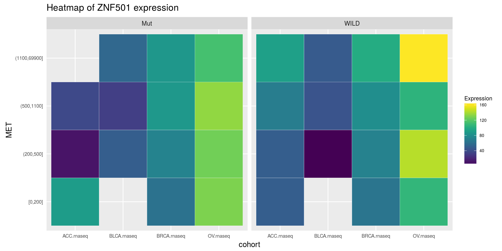
heatmapTCGA(
ACC_BLCA_BRCA_OV.rnaseq_TP53mutations_ZNF501medians,
"TP53",
"MET",
fill = "ZNF501",
facet.names = "cohort",
title = "Heatmap of ZNF501 expression"
)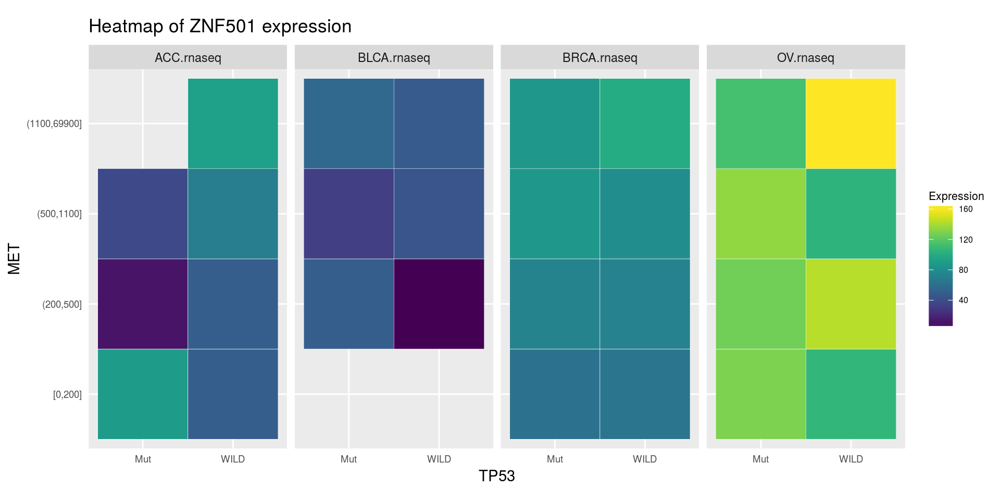
heatmapTCGA(
ACC_BLCA_BRCA_OV.rnaseq_TP53mutations_ZNF501medians,
"TP53",
"cohort",
fill = "ZNF501",
facet.names = "MET",
title = "Heatmap of ZNF501 expression"
)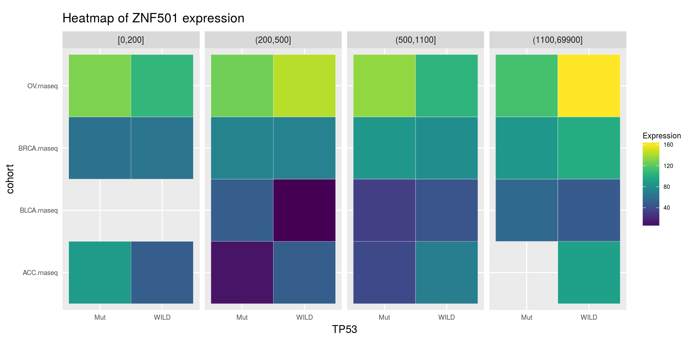